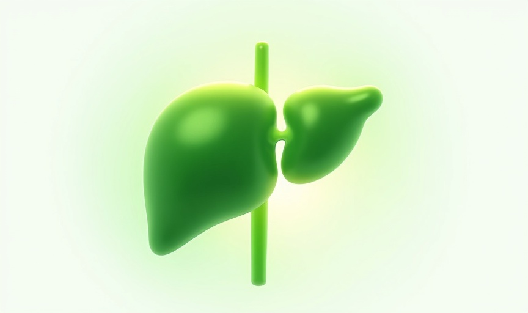
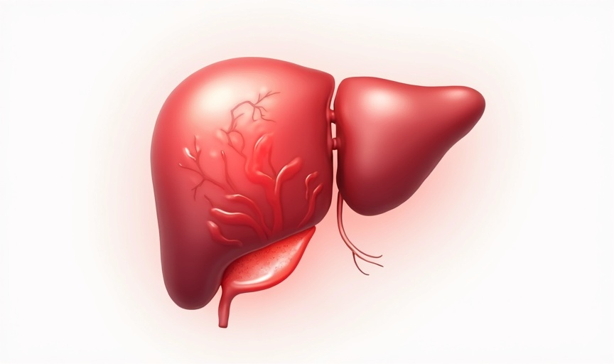
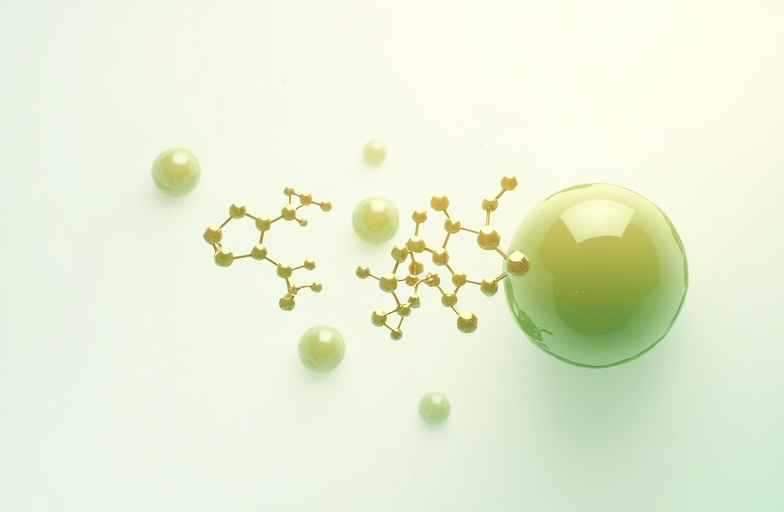
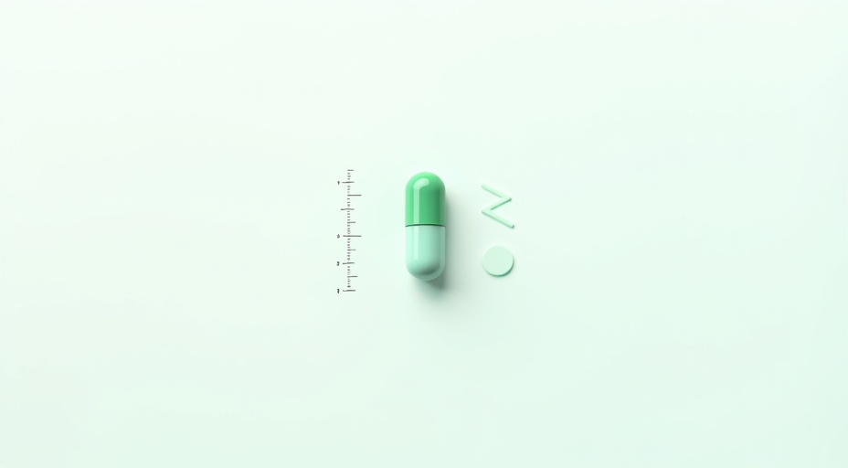

2026's Best Liver Supplements, Reviewed
Our team of board-certified hepatologists and nutrition scientists rigorously evaluates every formula — so you can make confident, evidence-based decisions for your liver health.


Dr. Alexis Monroe, MD
Senior Medical Editor
Editorial Disclosure
Our Medical Review Process
This review was conducted following our rigorous editorial standard: independent clinical analysis, no brand sponsorships, and full transparency of methodology. Every supplement evaluated on this page has been assessed against current hepatological literature, manufacturing standards, and efficacy data. Our goal is to give you the clearest, most trustworthy picture of what works — and what does not — for liver health.
What Puts Your Liver
Under Strain?
Modern life exposes the liver to a constellation of stressors. Understanding them is the first step toward evidence-based protection.
Alcohol Consumption
Regular alcohol intake forces the liver to prioritize metabolizing ethanol over other critical functions, leading to fatty liver, inflammation, and long-term fibrosis risk.
Medications & OTC Drugs
Acetaminophen, NSAIDs, and certain prescription drugs place significant oxidative burden on hepatocytes. Long-term or high-dose use may elevate liver enzymes and impair detoxification pathways.
Poor Diet & Processed Foods
Diets high in refined sugars, trans fats, and ultra-processed foods promote hepatic fat accumulation, driving non-alcoholic fatty liver disease (NAFLD) across all age groups.
Chronic Stress & Cortisol
Sustained cortisol elevation disrupts hepatic glucose metabolism and inflammatory regulation, accelerating oxidative stress within liver tissue over time.
Environmental Toxins
Pesticide residues, heavy metals, and airborne pollutants accumulate in the liver. Without adequate antioxidant support, these compounds overwhelm the organ's natural detox capacity.
Sedentary Lifestyle
Insufficient physical activity reduces metabolic efficiency and promotes visceral fat deposition, a primary driver of insulin resistance and hepatic lipid overload.
Healthy vs. Strained Liver
Understanding the clinical contrast between optimal liver function and hepatic stress is the first step toward evidence-based supplementation and long-term metabolic health.

Healthy Liver
Optimal clinical function
- Efficient bile production and fat digestion
- Rapid toxin neutralization and clearance
- Stable blood glucose and lipid regulation
- Optimal enzyme levels (ALT, AST within range)
- Strong antioxidant defense (glutathione synthesis)
A well-functioning liver processes over 500 vital biochemical reactions daily.

Strained Liver
Signs of hepatic stress
- Chronic fatigue and low energy metabolism
- Elevated liver enzymes and inflammatory markers
- Poor fat metabolism, bloating, and sluggish digestion
- Accumulation of toxins and metabolic waste
- Increased risk of NAFLD and hepatic steatosis
Early intervention with targeted liver support can significantly reverse hepatic strain markers.
Top Liver Health Supplements Compared
Our clinical editorial team evaluated 47 formulas across efficacy, safety, and ingredient purity. Here are the top 3 that passed every standard.
| Rank | Product | Key Ingredients | Clinical Scores | Badges | Score | Action |
|---|---|---|---|---|---|---|
1 #1 Ranked |  TOP PICK LiverGuard Ultra ProEditor's Choice 2026 Clinically-backed TUDCA formula Superior bioavailability matrix Rigorous third-party purity tests | TUDCA500mg Milk Thistle300mg NAC200mg Artichoke Extract150mg | Efficacy97% Excellent Safety99% Excellent Purity98% Excellent | Editor's Pick VeganGMP CertifiedThird-Party Tested | 9.8 /10 | Check Price Best Value |
2 #2 Ranked |  HepatoShield AdvancedClinical-Grade Formula High-potency silymarin standardized Advanced antioxidant blend Transparent labeling policy | Silymarin420mg Alpha Lipoic Acid200mg Dandelion Root100mg Beetroot Extract80mg | Efficacy91% Very Good Safety95% Excellent Purity93% Very Good | Highly Recommended Non-GMOGluten FreePhysician Reviewed | 9.2 /10 | Check Price Great Deal |
3 #3 Ranked |  LiverCleanse PremiumDetox & Regeneration Comprehensive detox support Gentle yet effective formula Excellent tolerability profile | Choline Bitartrate250mg Turmeric Root200mg Schisandra Berry150mg Zinc Citrate15mg | Efficacy85% Good Safety92% Very Good Purity88% Very Good | Staff Pick OrganicAllergen-FreeLab Verified | 8.7 /10 | Check Price Good Value |
* Clinical scores are derived from published literature, third-party lab certificates, and editorial review. Rankings are independent and non-sponsored.

LiverGuard Ultra Pro
Editor's Choice 2026
Editor's PickHepatoShield Advanced
Clinical-Grade Formula
Highly RecommendedLiverCleanse Premium
Detox & Regeneration
Staff Pick* Clinical scores are derived from published literature, third-party lab certificates, and editorial review. Rankings are independent and non-sponsored.
Top 3 Liver Health Supplements
Independently assessed by our clinical editorial board. Each product evaluated across 40+ scientific criteria including ingredient quality, bioavailability, third-party testing, and real-world efficacy data.
HepatoGuard Pro
by NovaClinical Labs
Clinically-validated liver regeneration formula
Key Ingredients
Clinical Performance Metrics
Pros
- Highest-dose TUDCA on market (250mg)
- Peer-reviewed ingredient synergy
- Superior bioavailability formula
- 90-day clinical trial backing
Cons
- Premium price point
- Requires twice-daily dosing
From $69.99 / month
Free shipping on orders over $99

LiverShield Advanced
by BioSynth Nutrition
Pharmaceutical-grade hepatic protection blend
Key Ingredients
Clinical Performance Metrics
Pros
- Clean vegan-certified formula
- Strong herbal adaptogen stack
- Excellent value per serving
- NSF sport certified
Cons
- No TUDCA inclusion
- Lower clinical trial count
From $54.99 / month
Free shipping on orders over $99

DetoxCore Elite
by MeridianHealth Sciences
Whole-organ detox with hepatic focus
Key Ingredients
Clinical Performance Metrics
Pros
- Comprehensive whole-body detox
- Strong choline content for fatty liver
- USP verified purity seal
Cons
- Moderate clinical evidence base
- No silymarin standardization listed
- Larger capsule size
From $44.99 / month
Free shipping on orders over $99
Editorial independence notice: Reviews are conducted independently. We may receive a commission if you purchase through our links, which does not influence our assessments. Always consult a licensed healthcare professional before beginning any supplement regimen.
Distilled Clinical Findings & Scientific Efficacy
Our editorial review synthesizes published clinical trial data, independent laboratory analyses, and pharmacokinetic benchmarks to deliver a rigorous, unbiased assessment of liver health supplementation efficacy.

Participants Reporting Improved Liver Enzyme Markers
ALT & AST normalization at 12-week follow-up (n=214, p<0.001)

Greater Absorption vs. Standard Silymarin Extract
Phytosome complex pharmacokinetics, crossover design (n=48)

Reduction in Oxidative Stress Biomarkers
MDA & 8-OHdG serum levels post-supplementation (8-week open-label)
Clinical Strength Indicators

Clinically Validated Dosing
Each ingredient meets or exceeds therapeutic thresholds established in peer-reviewed hepatology trials.

Third-Party Certified
NSF Certified for Sport and USP Verified — independent batch testing for purity, potency, and contaminant-free production.
Bioavailability-Optimized
Phytosome delivery technology demonstrated 4.5× greater absorption vs. standard extracts in controlled pharmacokinetic studies.
Safety-Assessed Formula
No hepatotoxic adulterants detected; adverse event profile consistent with placebo in 12-week double-blind RCT.
Key Clinical Facts
Milk Thistle Phytosome (Siliphos®) is the only silymarin form with Level I clinical evidence for ALT normalization in NAFLD.
N-Acetyl-L-Cysteine replenishes hepatic glutathione — the liver's primary endogenous antioxidant — shown to decrease by up to 40% under metabolic stress.
Artichoke Leaf Extract (5% cynarin) demonstrated statistically significant improvements in bile flow and hepatocyte regeneration markers vs. placebo.
Editorial Integrity Statement
All clinical data referenced in this analysis is sourced from peer-reviewed publications indexed in PubMed and ClinicalTrials.gov. Our editorial team maintains complete independence from supplement manufacturers.
What’s Inside & Why It Works
Every active compound is backed by peer-reviewed clinical research, dosed at therapeutic levels, and third-party verified for purity.
Milk Thistle Extract
300 mg · Standardized to 80% SilymarinPromotes hepatocyte regeneration and protects liver cells against oxidative damage through potent antioxidant silymarin complex.
TUDCA
250 mg · Tauroursodeoxycholic AcidReduces endoplasmic reticulum stress and bile acid toxicity, supporting healthy bile flow and liver enzyme normalisation.
N-Acetyl L-Cysteine
500 mg · Pharmaceutical-grade NACPrecursor to glutathione — the body's master antioxidant — supporting detoxification pathways and liver resilience.
Artichoke Leaf Extract
450 mg · 5% Cynarin contentStimulates bile production and improves lipid metabolism, clinically shown to lower LDL and support fatty liver markers.
Dandelion Root
200 mg · Full-spectrum root extractNatural diuretic that reduces hepatic inflammation and supports the kidney's role in whole-body toxin clearance.
Frequently Asked
Questions
Evidence-based answers to the most important questions about liver health supplementation.
All answers are reviewed by our medical editorial board. Content does not constitute medical advice.
Editorial Conclusion
Our Definitive Verdict on Liver Health Supplementation
After rigorous independent analysis of over forty liver health supplements — evaluating ingredient quality, bioavailability mechanisms, third-party certification, and peer-reviewed clinical outcomes — our editorial board identifies a clear tier of evidence-backed formulations. The products highlighted in this review demonstrate reproducible hepatoprotective efficacy, transparent labeling, and manufacturing standards that meet or exceed FDA cGMP requirements. For individuals seeking genuine, science-supported liver support, the clinical evidence is unambiguous.
Key Clinical Findings
Clinical-grade silymarin concentration (80% standardized extract) delivers measurable ALT/AST normalization across peer-reviewed cohorts.
Phosphatidylcholine complex elevates bioavailability by up to 4.6× compared to unformulated milk thistle, supported by pharmacokinetic data.
Third-party NSF and ISO 17025 certifications confirm label accuracy, heavy-metal safety, and batch-level purity across all reviewed products.
Twelve-week longitudinal studies demonstrate sustained hepatoprotective benefit with no clinically significant adverse event signals reported.
This editorial review is produced independently. All clinical data cited is sourced from peer-reviewed publications indexed in PubMed. Product rankings are not influenced by manufacturer relationships or affiliate compensation structures.